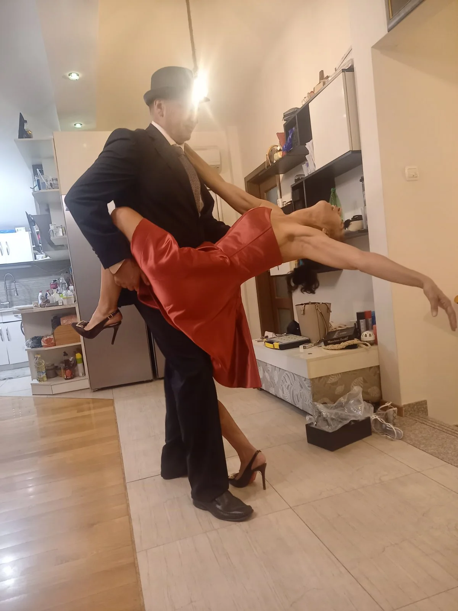
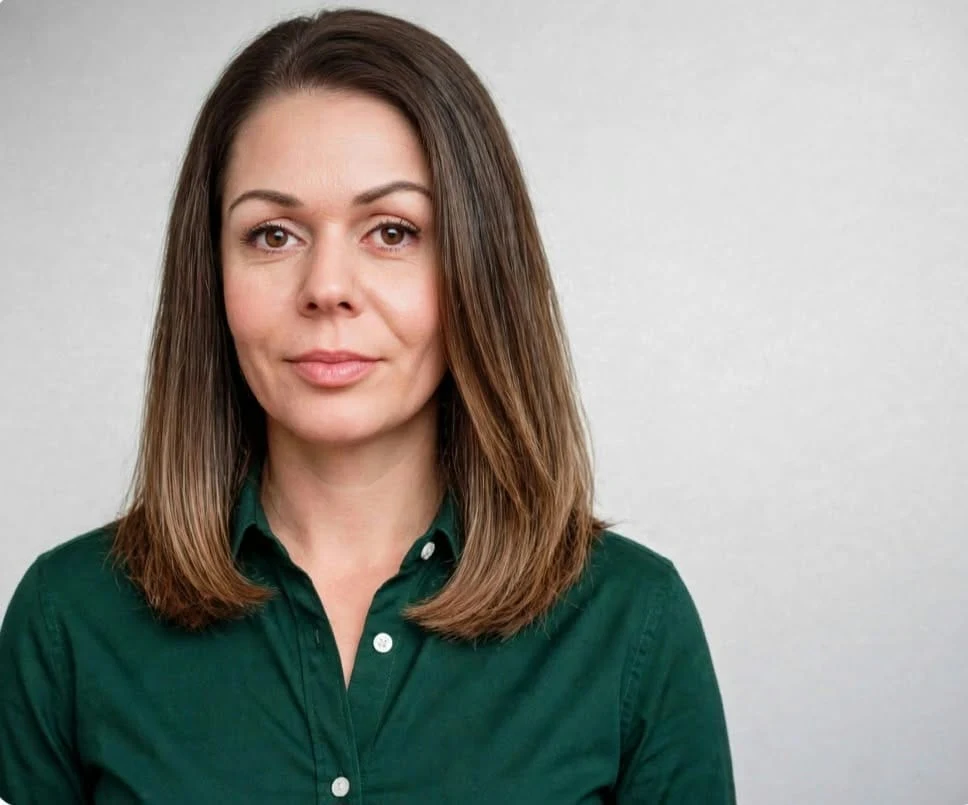

БАЛЕТ ТИНИТИ / ЕКИП
Хората зад
движението.
Запознайте се с педагогическия екип на школата.

СЪВРЕМЕННИ ТАНЦИ
Болеслава
Тенева
Преподавател по съвременни танци в Балет Тинити.
Контемпорари, лирикъл, акро денс, джаз, танцово шоу, опън и характерни танци.
Разгледайте графика ↗
КЛАСИЧЕСКИ БАЛЕТ
Евгения
Минкова
Преподавател по класически балет в Балет Тинити.
Балерина и солистка на Варненската опера. Завършила е Национално училище по изкуствата „Добри Христов“ във Варна и АМТИI в Пловдив.
Заниманията по класически балет се провеждат веднъж седмично.
Разгледайте направленията ↗